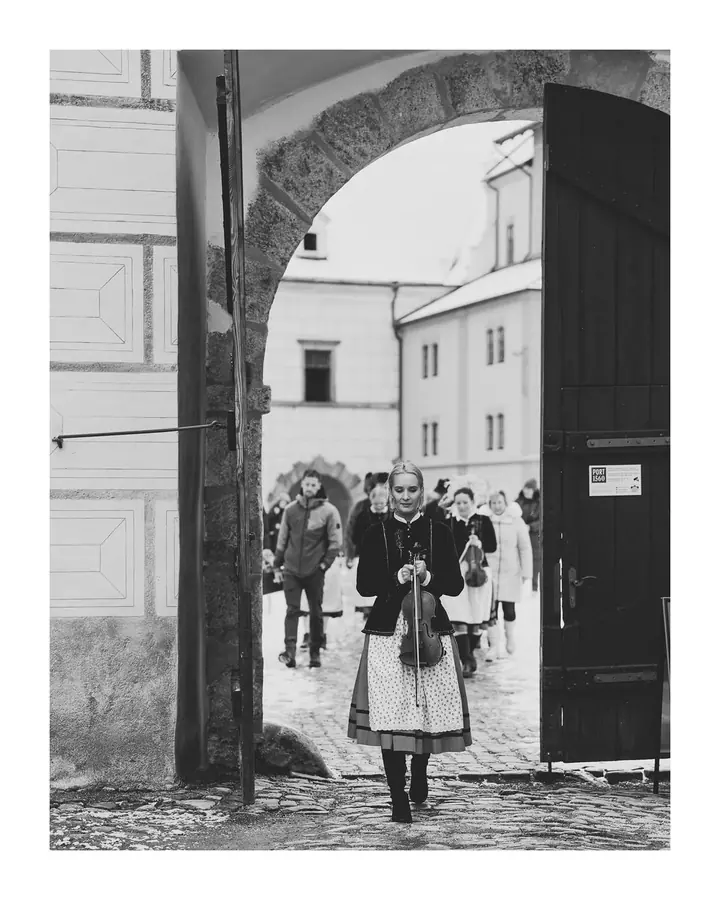
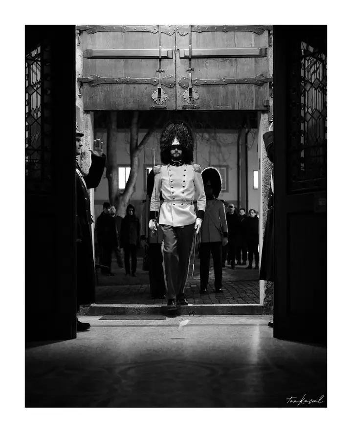

Portréty a fotostudio
V Českém Krumlově mám vlastní fotoslužby s ateliérem. Portréty fotím ve studiu i venku v ulicích města.

Rodinný a firemní fotograf
Jmenuji se Tom Kasal a jsem rodinný a firemní fotograf z Českého Krumlova. Na Náměstí Svornosti mám své fotostudio, ale jinak jezdím, kam to jen jde. Fotím pro radost vaši, svoji i pro váš business.
Zeptat se na termín
V Českém Krumlově mám vlastní fotoslužby s ateliérem. Portréty fotím ve studiu i venku v ulicích města.
Jsem rodinný a firemní fotograf a k tomu ještě provozuji vlastní fotoslužby s ateliérem v Českém Krumlově. Studio najdete přímo na Náměstí Svornosti 2, ale nejsem k němu přivázaný. Rád přijedu tam, kde se cítíte dobře vy.
Když zrovna nefotím na zakázku, fotím Krumlov jen tak pro radost: průvody zámeckými branami, lidi u stánků, zasněžené vyhlídky nad městem. Nejvíc mě baví obyčejné chvíle, které se dějí samy od sebe, a často je fotím černobíle.
Fotím rodiny, portréty, svatby i firmy. Firemní fotografii a prostory najdete i na mém webu ARCHIphoto. Jestli vás něco z toho láká, můžete se mi rovnou ozvat.
Napište mi e-mail nebo zprávu, co byste rádi nafotili, a já se vám brzy ozvu.
Společně vybereme termín i místo. Můžeme fotit v mém studiu v Krumlově nebo přijedu za vámi.
Bez stresu a strnulého pózování. Nechám vás být sami sebou a fotím to, co se právě děje.
Z focení vyberu ty nejlepší záběry, upravím je a pošlu vám je v plném rozlišení.
Moje fotostudio najdete na Náměstí Svornosti 2 v Českém Krumlově, ale jinak jezdím, kam to jen jde.
Ano, firemní fotografie je spolu s rodinným focením moje hlavní práce. Fotky pro firmy najdete i na mém webu ARCHIphoto.
Ano, svatby fotím. Napište mi termín a místo, ověřím, jestli mám volno, a domluvíme podrobnosti.
Cena záleží na tom, co a kde budeme fotit. Napište mi, co máte v plánu, a já vám pošlu nabídku na míru.